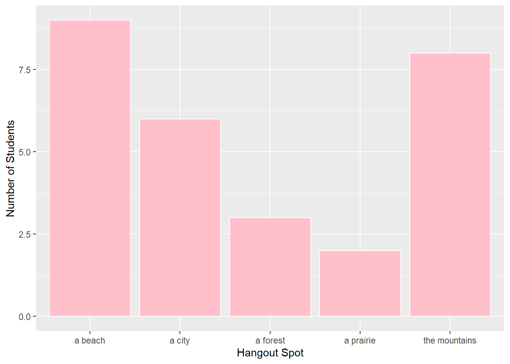
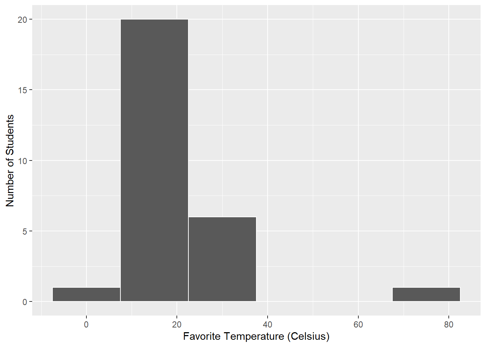
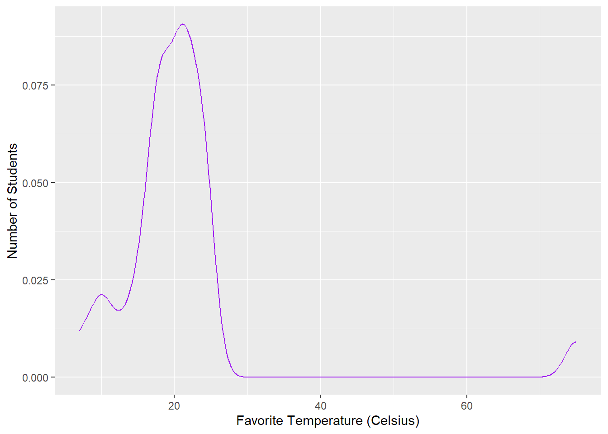
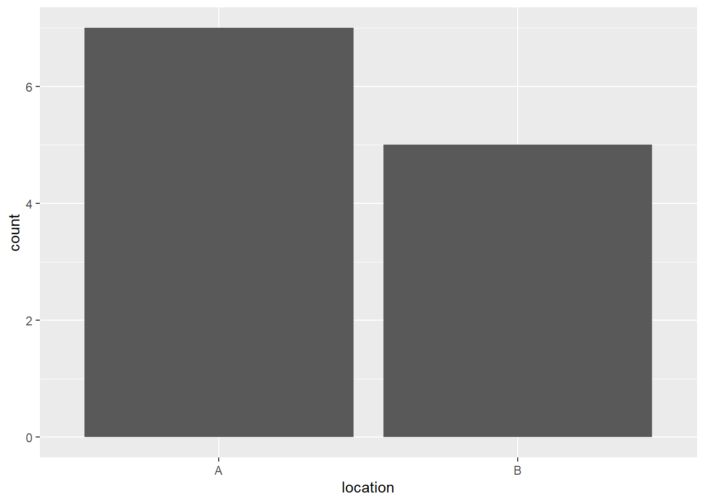
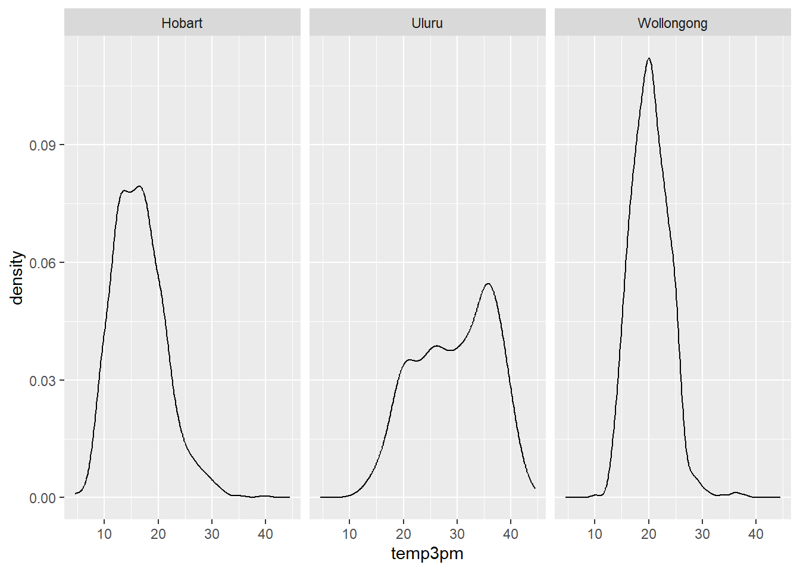
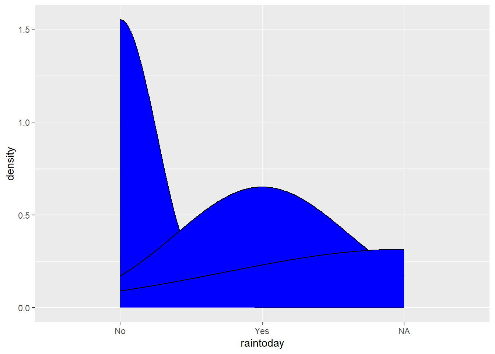

# Import datasurvey <-read.csv("https://ajohns24.github.io/data/112/about_us_2024.csv")# How many students have now filled out the survey? dim(survey)
[1] 28 4
#28 students. # What type of variables do we have? str(survey)
'data.frame': 28 obs. of 4 variables:
$ cafe_mac : chr "Cheesecake" "Cheese pizza" "udon noodles" "egg rolls" ...
$ minutes_to_campus: int 15 10 4 7 5 35 5 15 7 20 ...
$ fave_temp : num 18 24 18 10 18 7 75 24 13 16 ...
$ hangout : chr "the mountains" "a beach" "the mountains" "a beach" ...
#Character, integer, numeric, and another character.
Example 1: Hangout Preferences
library(tidyverse)
── Attaching core tidyverse packages ──────────────────────── tidyverse 2.0.0 ──
✔ dplyr 1.1.4 ✔ readr 2.1.5
✔ forcats 1.0.0 ✔ stringr 1.5.1
✔ ggplot2 3.5.1 ✔ tibble 3.2.1
✔ lubridate 1.9.4 ✔ tidyr 1.3.1
✔ purrr 1.0.2
── Conflicts ────────────────────────────────────────── tidyverse_conflicts() ──
✖ dplyr::filter() masks stats::filter()
✖ dplyr::lag() masks stats::lag()
ℹ Use the conflicted package (<http://conflicted.r-lib.org/>) to force all conflicts to become errors
ggplot(survey, aes(x = hangout)) +geom_bar(color ="white", fill ="pink") +labs(x ="Hangout Spot", y ="Number of Students")

There was some variability in answers - most students preferred a beach as a hangout spot, and the least amount of students favored a prairie.
Example 2: Temperature Preferences
#Plot 1 ggplot(survey, aes(x = fave_temp)) +geom_histogram(color ="white", binwidth =15) +labs(x ="Favorite Temperature (Celsius)", y ="Number of Students")

#Plot 2 ggplot(survey, aes(x = fave_temp)) +geom_density(color ="purple") +labs(x ="Favorite Temperature (Celsius)", y ="Number of Students")

Responses were typically around 20 degrees Celsius, with responses typically in the range of 0 degrees to 30 degrees. There is an outlier at about 85 degrees.
rain_today location
1 no A
2 no A
3 no A
4 no A
5 yes A
6 no A
7 yes A
8 no B
9 yes B
10 yes B
11 no B
12 yes B
ggplot(weather, aes(x = location)) +geom_bar()

10 5.1 Review
library(tidyverse)# Import dataweather <-read.csv("https://mac-stat.github.io/data/weather_3_locations.csv") |>mutate(date =as.Date(date)) # Check out the first 6 rowshead(weather)
date location mintemp maxtemp rainfall evaporation sunshine
1 2020-01-01 Wollongong 17.1 23.1 0 NA NA
2 2020-01-02 Wollongong 17.7 24.2 0 NA NA
3 2020-01-03 Wollongong 19.7 26.8 0 NA NA
4 2020-01-04 Wollongong 20.4 35.5 0 NA NA
5 2020-01-05 Wollongong 19.8 21.4 0 NA NA
6 2020-01-06 Wollongong 18.3 22.9 0 NA NA
windgustdir windgustspeed winddir9am winddir3pm windspeed9am windspeed3pm
1 SSW 39 SSW SSE 20 15
2 SSW 37 S ENE 13 15
3 NE 41 NNW NNE 7 17
4 SSW 78 NE NNE 15 17
5 SSW 57 SSW S 31 35
6 NE 35 ESE NE 17 20
humidity9am humidity3pm pressure9am pressure3pm cloud9am cloud3pm temp9am
1 69 64 1014.9 1014.0 8 1 19.1
2 72 54 1020.1 1017.7 7 1 19.8
3 72 71 1017.5 1013.0 6 NA 23.4
4 77 69 1008.8 1003.9 NA NA 24.5
5 70 75 1018.9 1019.9 NA 7 20.7
6 71 71 1021.2 1018.2 NA NA 20.9
temp3pm raintoday risk_mm raintomorrow
1 22.9 No 0.0 No
2 23.6 No 0.0 No
3 25.7 No 0.0 No
4 26.7 No 0.0 No
5 20.0 No 0.0 No
6 22.6 No 0.8 No
# What are the units of observation? -> 2367nrow(weather)
[1] 2367
# How many data points do we have? -> 2367dim(weather)
[1] 2367 24
# What type of variables do we have?str(weather)
'data.frame': 2367 obs. of 24 variables:
$ date : Date, format: "2020-01-01" "2020-01-02" ...
$ location : chr "Wollongong" "Wollongong" "Wollongong" "Wollongong" ...
$ mintemp : num 17.1 17.7 19.7 20.4 19.8 18.3 19.9 20.1 19.8 20.5 ...
$ maxtemp : num 23.1 24.2 26.8 35.5 21.4 22.9 25.6 23.2 23.1 25.4 ...
$ rainfall : num 0 0 0 0 0 0 0.8 1.6 0 0 ...
$ evaporation : num NA NA NA NA NA NA NA NA NA NA ...
$ sunshine : num NA NA NA NA NA NA NA NA NA NA ...
$ windgustdir : chr "SSW" "SSW" "NE" "SSW" ...
$ windgustspeed: int 39 37 41 78 57 35 44 41 39 56 ...
$ winddir9am : chr "SSW" "S" "NNW" "NE" ...
$ winddir3pm : chr "SSE" "ENE" "NNE" "NNE" ...
$ windspeed9am : int 20 13 7 15 31 17 30 31 24 19 ...
$ windspeed3pm : int 15 15 17 17 35 20 7 33 26 39 ...
$ humidity9am : int 69 72 72 77 70 71 76 77 76 79 ...
$ humidity3pm : int 64 54 71 69 75 71 72 76 79 76 ...
$ pressure9am : num 1015 1020 1018 1009 1019 ...
$ pressure3pm : num 1014 1018 1013 1004 1020 ...
$ cloud9am : int 8 7 6 NA NA NA NA 8 NA NA ...
$ cloud3pm : int 1 1 NA NA 7 NA NA NA NA NA ...
$ temp9am : num 19.1 19.8 23.4 24.5 20.7 20.9 22.9 21.3 21.2 23 ...
$ temp3pm : num 22.9 23.6 25.7 26.7 20 22.6 24.9 22.2 22.2 25.1 ...
$ raintoday : chr "No" "No" "No" "No" ...
$ risk_mm : num 0 0 0 0 0 0.8 1.6 0 0 1 ...
$ raintomorrow : chr "No" "No" "No" "No" ...
#We have integer, numeric, and character variables in this data set.
Warning: Removed 19 rows containing non-finite outside the scale range
(`stat_density()`).

Example 3
# Don't worry about the syntax (we'll learn it soon)woll <- weather |>filter(location =="Wollongong") |>mutate(date =as.Date(date))
# How often does it raintoday?# Fill your geometric layer with the color blue.ggplot(woll, aes(x = raintoday)) +geom_density(fill ="blue")

(COME BACK TO)
Source Code
---title: "Notes"---# 4.1 Review - Bivariate Viz ```{r}# Import datasurvey <-read.csv("https://ajohns24.github.io/data/112/about_us_2024.csv")# How many students have now filled out the survey? dim(survey)#28 students. # What type of variables do we have? str(survey)#Character, integer, numeric, and another character. ```**Example 1**: Hangout Preferences ```{r}library(tidyverse)ggplot(survey, aes(x = hangout)) +geom_bar(color ="white", fill ="pink") +labs(x ="Hangout Spot", y ="Number of Students")```There was some variability in answers - most students preferred a beach as a hangout spot, and the least amount of students favored a prairie. **Example 2**: Temperature Preferences```{r}#Plot 1 ggplot(survey, aes(x = fave_temp)) +geom_histogram(color ="white", binwidth =15) +labs(x ="Favorite Temperature (Celsius)", y ="Number of Students")#Plot 2 ggplot(survey, aes(x = fave_temp)) +geom_density(color ="purple") +labs(x ="Favorite Temperature (Celsius)", y ="Number of Students")```Responses were typically around 20 degrees Celsius, with responses typically in the range of 0 degrees to 30 degrees. There is an outlier at about 85 degrees. # 4.2 New Stuff **Exploring relationships** ```{r}weather <-data.frame(temp_3pm =c(24, 26, 20, 15, 15, 0, 40, 60, 57, 44, 51, 75),location =rep(c("A", "B"), each =6))weatherggplot(weather, aes(x = temp_3pm)) +geom_density()``````{r}weather <-data.frame(rain_today =c("no", "no", "no", "no", "yes", "no", "yes", "no", "yes", "yes", "no", "yes"),location =c(rep("A", 7), rep("B", 5))) weatherggplot(weather, aes(x = location)) +geom_bar()```# 5.1 Review```{r}library(tidyverse)# Import dataweather <-read.csv("https://mac-stat.github.io/data/weather_3_locations.csv") |>mutate(date =as.Date(date)) # Check out the first 6 rowshead(weather)# What are the units of observation? -> 2367nrow(weather)# How many data points do we have? -> 2367dim(weather)# What type of variables do we have?str(weather)#We have integer, numeric, and character variables in this data set. ```**Example 1** ```{r}ggplot(weather, aes (x = temp3pm)) +geom_density()```**Example 2** Construct 3 plots that address the following research question:How do afternoon temperatures (temp3pm) differ by location?```{r}# Plot 1 (no facets & starting from a density plot of temp3pm)ggplot(weather, aes(x = temp3pm, fill = location)) +geom_density(alpha =0.5)``````{r}# Plot 2 (no facets or densities)ggplot(weather, aes(x = temp3pm, fill = location)) +geom_histogram()``````{r}# Plot 3 (facets)ggplot(weather, aes(x = temp3pm)) +geom_density(alpha =0.5) +facet_wrap(~location)```**Example 3** ```{r}# Don't worry about the syntax (we'll learn it soon)woll <- weather |>filter(location =="Wollongong") |>mutate(date =as.Date(date)) ``````{r}# How often does it raintoday?# Fill your geometric layer with the color blue.ggplot(woll, aes(x = raintoday)) +geom_density(fill ="blue")```(COME BACK TO)